1. Resumen de la Idea y Evolución UX
Oficios del Barrio es una aplicación web instalable en el celular (SPA Mobile-First) diseñada para conectar de forma rápida, accesible y segura a personas que brindan servicios de oficios (plomero, gasista, electricista, pintor, albañil) con vecinos de su mismo barrio que necesitan resolver una urgencia o mantenimiento en el hogar.
Evolución respecto a nuestra entrega inicial: Partimos de la premisa de máxima simpleza para usuarios con conocimientos tecnológicos limitados. En lugar de obligar al vecino a copiar números o salir de la plataforma, diseñamos un chat interno que replica las convenciones visuales de WhatsApp (burbujas, hora, tilde de leído), sin solicitar ni exponer números de teléfono personales (toda la comunicación sucede íntegramente dentro de la app) y permitiendo que, al finalizar el trabajo, el vecino califique al profesional desde el mismo hilo de conversación.
- Objetivo 1 — Cercanía: Búsqueda filtrada por distancia en cuadras reales dentro del barrio.
- Objetivo 2 — Facilidad de uso: Botones grandes (mínimo 56px), un único botón naranja de acción por pantalla y chips de respuesta rápida para no tener que escribir.
- Objetivo 3 — Reputación barrial: Calificación por estrellas, etiquetas rápidas (Puntual, Precio justo, Prolijo, Explicó todo) y reseñas de vecinos.
2. Datos de la Empresa, Icono y Logos
- Nombre del Producto / Organización: Oficios del Barrio
- Eslogan: "El vecino que resuelve, a la vuelta de tu casa"
- Comunidad de aplicación: Barrios residenciales (piloto ambientado en Barrio Alberdi, Banda Norte y Barrio Fénix, Río Cuarto).
Icono para Apps y Tiendas
Hogar + punto naranja de cercanía
Logo Formato Claro (SVG)
Logo Formato Oscuro (SVG)
3. Valor Agregado de la Propuesta
¿Qué ofrece nuestra aplicación que el cliente no encuentra en opciones gratuitas o libres (grupos de Facebook, clasificados o contactos de WhatsApp)?
- Disponibilidad en tiempo real: Un interruptor simple (
Disponible / No disponible) en el panel del prestador evita que el vecino pierda horas escribiendo a trabajadores que no pueden atender.
- Comunicación 100% interna sin pedir teléfono: No se solicita número telefónico ni al vecino ni al trabajador; toda la comunicación se realiza desde el chat integrado de la app, evitando spam y llamadas fuera de horario.
- Reputación vinculada al servicio: Las opiniones provienen de vecinos reales y destacan atributos concretos (puntualidad, prolijidad, claridad en el presupuesto) además de exhibir el badge de Matriculado.
- Cero fricción de redacción: Respuestas rápidas prearmadas tanto al iniciar la consulta como al responder o calificar.
4. ¿Cómo Ayuda la App a nuestra Comunidad?
- Economía Local Circular: Fomenta la contratación de trabajadores a pocas cuadras de distancia sin intermediarios ni comisiones.
- Inclusión Digital: Brinda presencia digital inmediata a trabajadores independientes que no manejan marketing ni redes sociales, mediante un alta guiada en 3 pasos.
- Seguridad Comunitaria: Genera tranquilidad en adultos mayores y familias al contar con referencias directas de sus propios vecinos.
5. Desarrollos del Cursado: Dónde los Tuvimos en Cuenta y Cómo los Valoramos
A continuación detallamos cómo valoramos e implementamos en el proyecto cada uno de los desarrollos troncales vistos durante el año en la materia:
💎 Cómo lo valoramos: Lo consideramos la base para cumplir nuestra promesa de "cero curva de aprendizaje". Como apuntamos a vecinos y trabajadores con manejo tecnológico moderado o limitado, valoramos que la interfaz nunca obligue al usuario a adivinar cómo funciona un control ni a aprender un flujo extraño, sino que aproveche sus modelos mentales previos y comunique cada acción mediante significantes visuales (affordances) claros.
📍 Dónde lo tuvimos en cuenta en "Oficios del Barrio":
- Modelo Mental de Mensajería (Pantalla
06-chat): En lugar de usar formularios de presupuesto complejos, adoptamos el modelo mental de WhatsApp que el vecino ya usa todos los días: burbujas azules a la derecha (enviado), blancas a la izquierda (recibido), hora y marca de "10:12 · Leído".
- Adaptación al Modelo Mental de cada Rol: Así como en los ejercicios de clase adaptamos la interfaz según quién mira la pantalla, aquí diferenciamos el modelo mental del Vecino (que busca resolver una urgencia eligiendo un icono de gota/llama/rayo y viendo a cuántas cuadras está el trabajador) frente al modelo mental del Prestador (que al abrir su panel en
08-prestador-panel ve primero su interruptor de trabajo diario y sus 5 consultas sin leer).
- Affordance Visual por Capas, Sombra y Estados: Los botones principales (
56px de alto) tienen relieve mediante box-shadow y bordes redondeados, diferenciándose de los contenedores planos. Los chips de respuesta rápida y de calificación ("Puntual", "Prolijo") cambian de borde fino gris a relleno azul con borde grueso al seleccionarse.
- Affordance sin depender solo del color: Para garantizar que una persona con daltonismo o baja visión perciba el estado del sistema, la disponibilidad nunca se indica solo con verde o rojo: combina punto gráfico + texto explícito (
● Disponible / ● No disponible) y deshabilita el botón de contacto cuando el prestador no atiende.
- Mapeo Natural: El toggle switch del panel del prestador mapea espacialmente derecha = activo/disponible, y la fila de 5 estrellas en
07-calificacion ilumina progresivamente las estrellas mientras traduce el puntaje a lenguaje natural ("Muy bueno", "Excelente").
💎 Cómo lo valoramos: Valoramos las Leyes de Gestalt y la Jerarquía Visual como la herramienta fundamental para eliminar el ruido visual ante una urgencia doméstica. Cuando un vecino busca un plomero o gasista, necesita escanear la pantalla en menos de 10 segundos y distinguir de un vistazo quién está cerca, quién está disponible y qué botón debe tocar.
📍 Dónde lo tuvimos en cuenta en "Oficios del Barrio":
- Ley de Región Común (
03-home-cliente y 04-resultados): Cada prestador y cada opinión vecinal están delimitados dentro de tarjetas blancas (#ffffff) con borde suave (#e3edf9) sobre un fondo neutro (#f5f7fa), agrupando avatar, nombre, oficio, estrellas, distancia y CTA en una unidad coherente.
- Ley de Proximidad (
09-registro-prestador y tarjetas): Agrupamos a 4px-8px los datos íntimamente relacionados (Nombre + Badge de estado, o Label + Input en el formulario) y separamos con 20px-24px los bloques independientes para evitar errores de lectura.
- Ley de Similitud: Todos los controles de filtrado ("Cerca mío", "Mejor puntuados"), respuestas rápidas del chat y etiquetas de calificación comparten morfología de píldora (
border-radius: 9999px), enseñándole al usuario un único patrón visual repetible.
- Ley de Figura-Fondo: Aplicada en las tarjetas blancas superpuestas sobre los encabezados azules (
02-bienvenida y 05-perfil-prestador) y en el Modal de confirmación con fondo oscurecido (rgba(0,0,0,0.55)) que aísla la decisión principal.
- Jerarquía Visual en 4 Niveles (
05-perfil-prestador): Ordenamos la vista del perfil según el peso de decisión: 1° Identidad y Matrícula (Avatar XL + Título 22px + Badges), 2° Resumen Estadístico (3 cajas simétricas con números en 24px Bold: 4.8 puntaje, 23 trabajos, 6 cuadras), 3° Contexto y Prueba Social ("Sobre mí" y reseñas) y 4° Conversión Fija (CTA inferior naranja fijo al borde de la pantalla).
💎 Cómo lo valoramos: Valoramos la Estética Funcional bajo la premisa de que el diseño visual no es decoración, sino comunicación operativa. Sistematizamos el color, la tipografía y los componentes en un Sistema de Diseño formal (tanto en Figma como en src/css/tokens.css y components.css) donde cada color y cada tamaño tipográfico cumple una función de legibilidad, accesibilidad WCAG AA y conversión.
📍 Dónde lo tuvimos en cuenta en "Oficios del Barrio":
- Uso Funcional del Color (Regla de Un Solo Naranja por Pantalla):
- Azul Confianza (
#1a56a8): Sostiene la estructura, encabezados y navegación. Con texto blanco alcanza un contraste de 6.9:1 (cumple AA y AAA).
- Naranja Oficio (
#d35400): Reservado exclusivamente para la acción de conversión (contactar o calificar). Al no repetirse en elementos decorativos, guía la vista directo al objetivo de negocio.
- Tokens Semánticos y Modo Oscuro (
Light / Dark Mode): Verde (#146b39) para disponible, Rojo (#dc2626) para no disponible, y paleta completa adaptable a Modo Oscuro mediante variables CSS ([data-theme="dark"]) con persistencia en localStorage.
- Tipografía Funcional (
Inter y Regla de Mínimo 16px): Elegimos Inter por su legibilidad en pantallas móviles. Definimos por regla del sistema que ningún texto de contenido baje de 15px-16px, reservando los 12px-13px solo para metadatos secundarios (hora o contadores), garantizando lectura cómoda para adultos mayores.
- Componentes UI Modulares y los 5 Estados Interactivos: Diseñamos y programamos componentes atómicos reutilizables (Botones, Inputs con foco azul de 2px, Chips, Tarjetas de prestador, Burbujas de chat, Estrellas, Switch de estado y Barra de navegación inferior) implementando los 5 estados obligatorios: Default, Hover, Active, Focus (
:focus-visible de 3px para navegación por teclado) y Disabled.
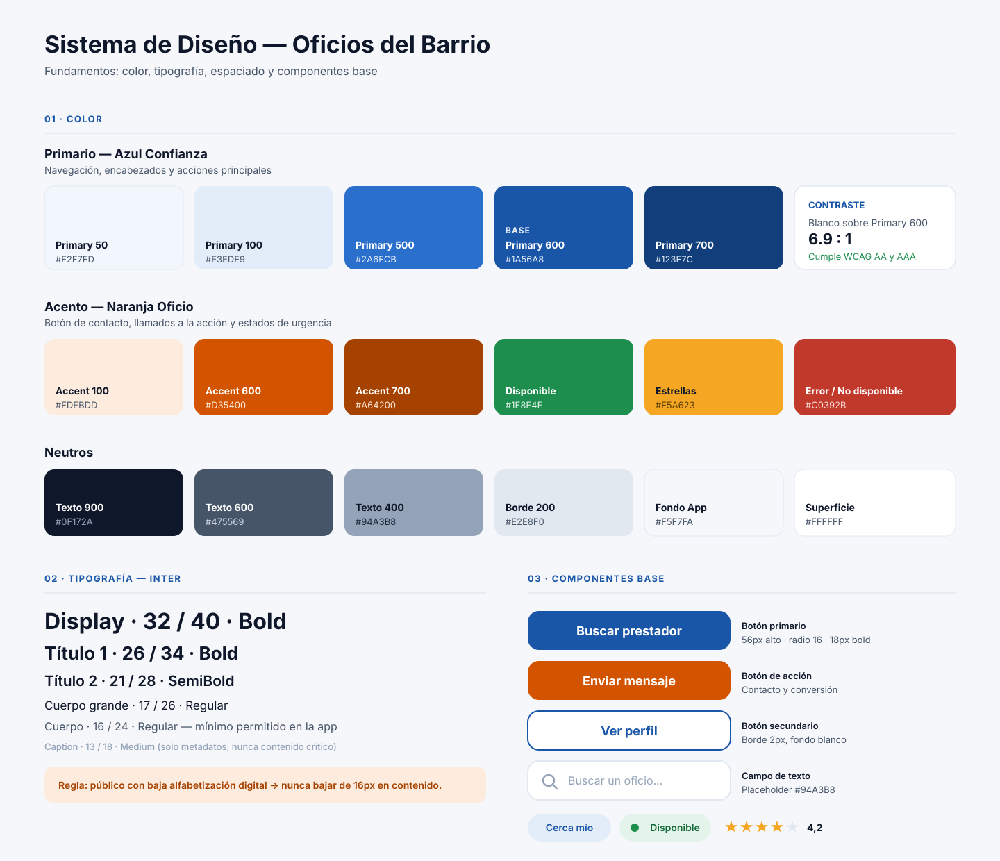
5.1. Arquitectura de Información y Mapa del Sitio (Sitemap)
Estructuramos la arquitectura de información priorizando caminos cortos y directos desde la bienvenida hasta el contacto en el chat, integrando la calificación final dentro de la misma conversación para que el vecino no tenga que buscar en otra sección dónde puntuar el trabajo.
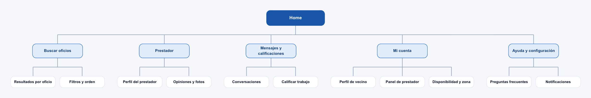
5.2. Recorrido del Usuario
Mapeamos el flujo temporal por carriles (Vecino vs. Prestador) y los momentos clave de interacción a lo largo de la aplicación:
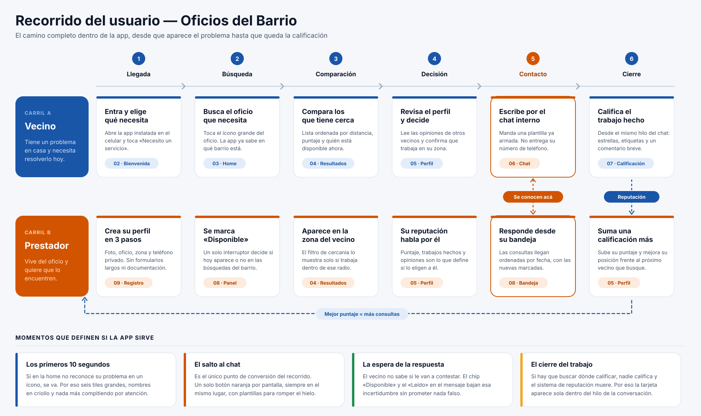
5.3. Evolución de Wireframes (Baja Fidelidad) a Diseño Final UI y Web SPA
02. Bienvenida y Selección de Rol
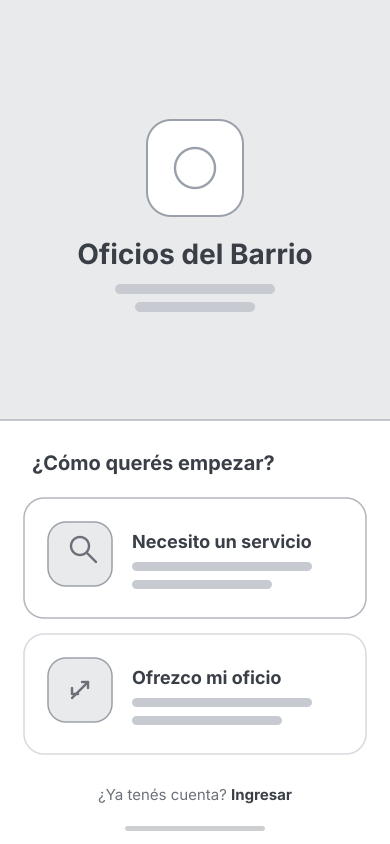
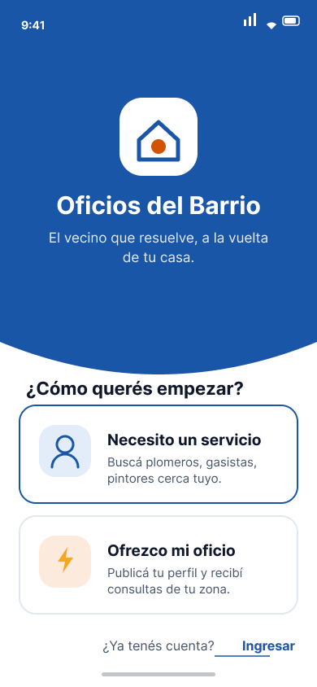
03. Home del Cliente
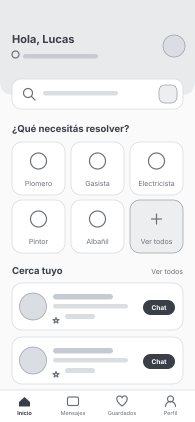
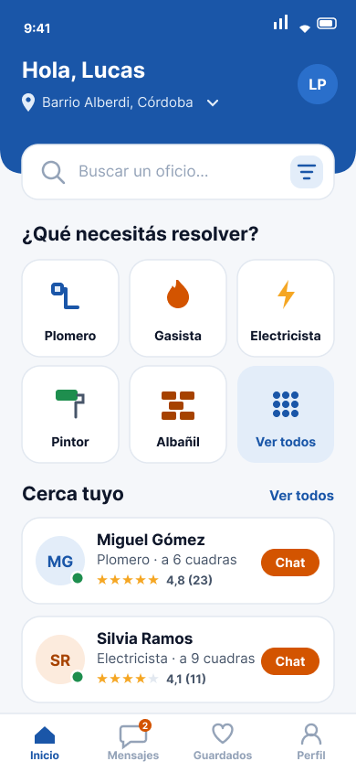
04. Resultados y Filtros
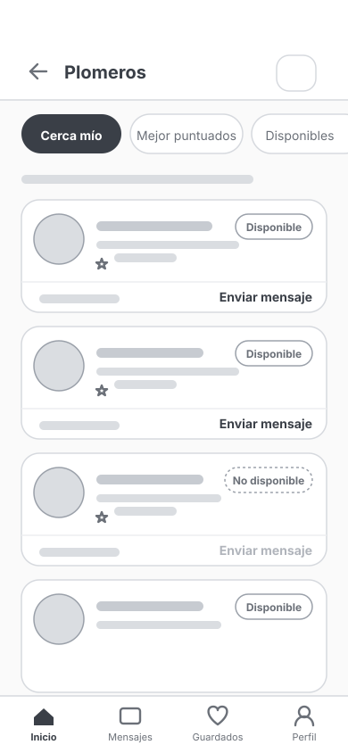
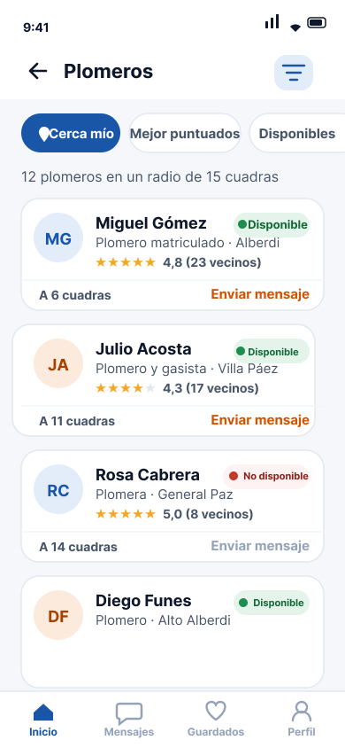
05. Perfil del Prestador
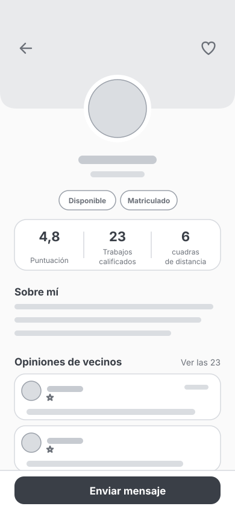
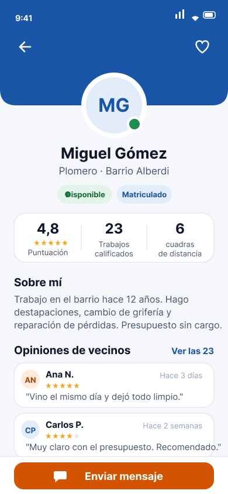
06. Chat Interno y Cierre
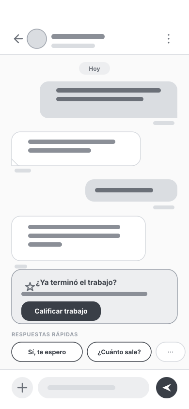
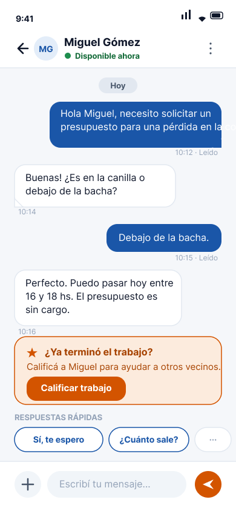
07. Calificación con Chips
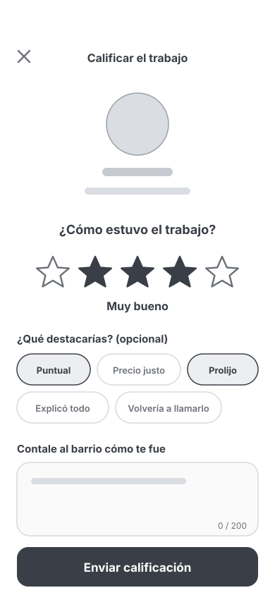
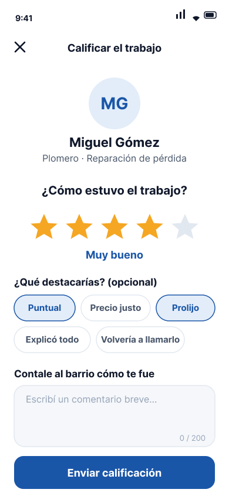
08. Panel del Prestador
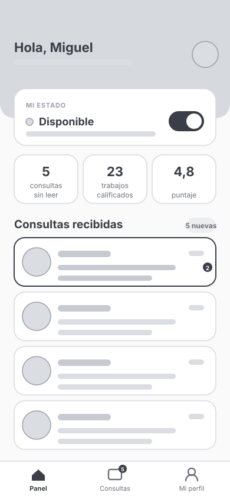
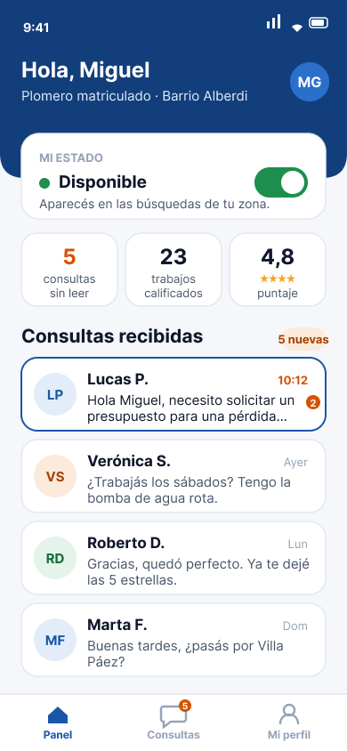
09. Registro en 3 Pasos
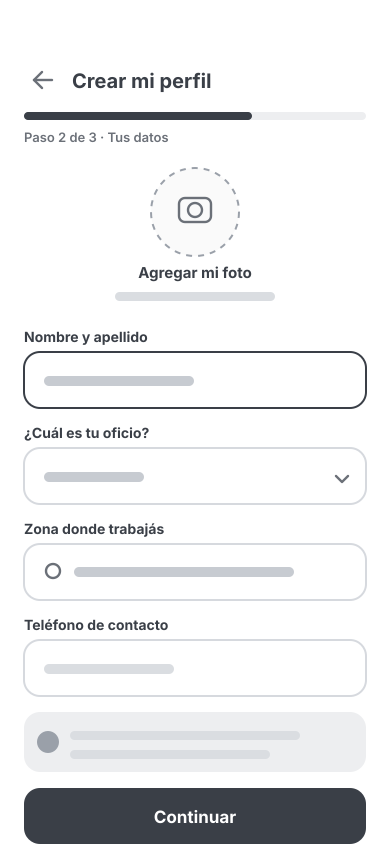
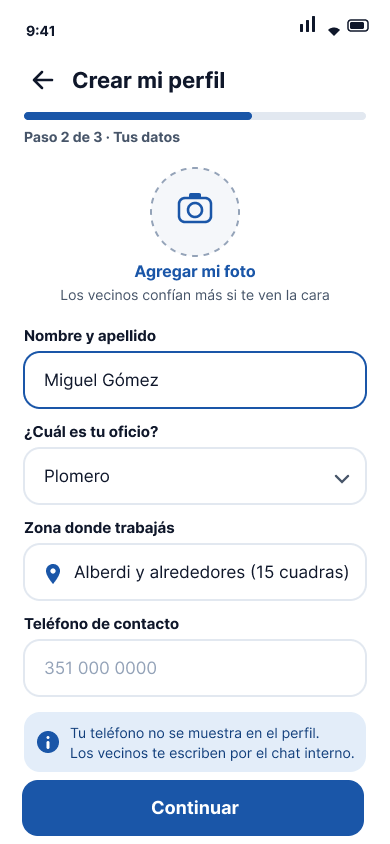
6. Equipo del Proyecto
Transparencia y roles de los integrantes que llevaron adelante la investigación, el diseño y el desarrollo de Oficios del Barrio:
LP
Lucas Pérez
UX/UI Lead & Frontend Architect
Responsable de la arquitectura de la Web SPA, implementación de Estética Funcional en CSS Tokens y Componentes UI, accesibilidad WCAG AA y navegación por teclado.
LN
Leonardo Neira
UX Researcher & Information Architect
Encargado del estudio de Modelos Mentales y Affordance, análisis de recorridos de usuario y definición de la arquitectura en el Sitemap.
TP
Thomas Pereyra
UI Designer & Prototyping Specialist
Responsable de aplicar las Leyes de Gestalt y Jerarquía Visual desde los wireframes estructurales hasta el prototipo de alta fidelidad en Figma.